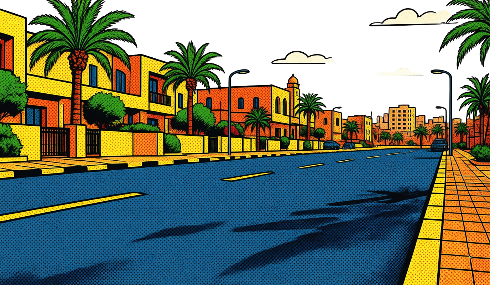
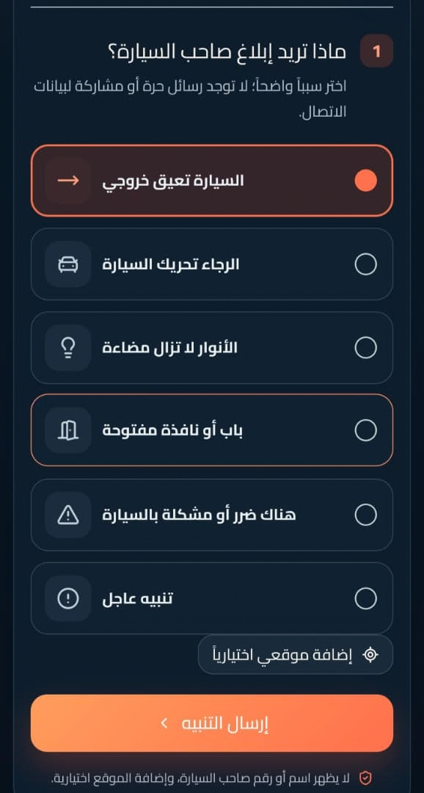
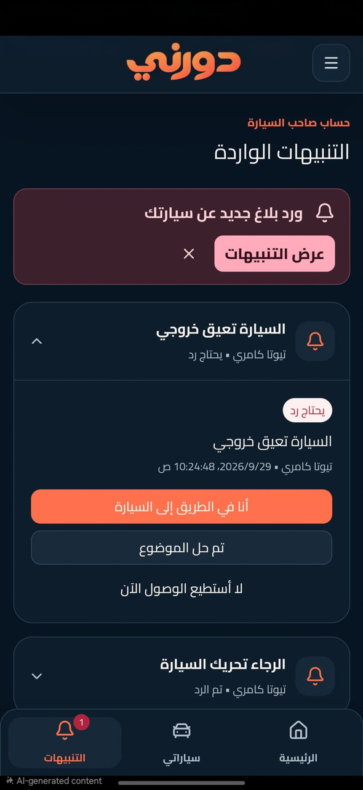
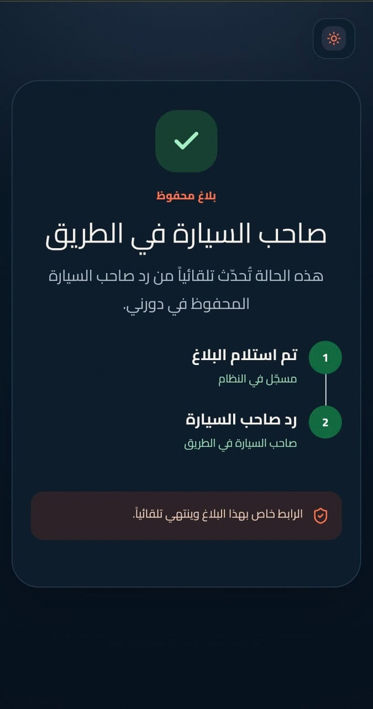

امسح الرمز
افتح كاميرا هاتفك وامسح رمز دورني الموجود على السيارة.
دورني يوصّل التنبيه بسرعة ويحافظ على خصوصية الطرفين. امسح الرمز، اختار السبب، وأرسل.


من أول مسح للرمز حتى وصول التنبيه لصاحب السيارة.
افتح كاميرا هاتفك وامسح رمز دورني الموجود على السيارة.
حدد المشكلة من قائمة واضحة، بدون كتابة أو مشاركة بيانات.
يوصل الإشعار لصاحب السيارة فوراً ويقدر يرد على حالته.
صاحب السيارة يستلم سبب التنبيه ويحدّث حالته. المرسل يعرف إن البلاغ وصل بدون مكالمات محرجة أو انتظار مجهول.


التواصل يصير داخل تجربة دورني. لا اسم المرسل يظهر، ولا رقم صاحب السيارة، ولا يتم فتح محادثة شخصية بين الطرفين.
بطاقات دورني حل عملي للمركبات التابعة للشركات، خدمات التوصيل والأساطيل الصغيرة.
الإجابات الأساسية لفهم البطاقة وطريقة عمل الخدمة.
لا. دورني مصمم لإرسال التنبيه بدون إظهار رقم المرسل أو رقم صاحب السيارة للطرف الآخر.
مسح الرمز يفتح تجربة الإبلاغ مباشرة. صاحب السيارة يحتاج حساباً مرتبطاً بالبطاقة لاستلام التنبيه.
تُثبت في مكان ظاهر من الزجاج الأمامي أو الخلفي بحيث يمكن مسح الرمز بسهولة من خارج السيارة.
يستلم صاحب السيارة إشعاراً بالسبب ويقدر يحدّث الحالة، مثلاً: أنا في الطريق إلى السيارة.
خلّي رمز البطاقة قريب منك وابدأ التفعيل في أقل من دقيقة.
أدخل الرمز المكتوب أسفل QR في بطاقتك. لن نطلب منك بيانات دفع هنا.